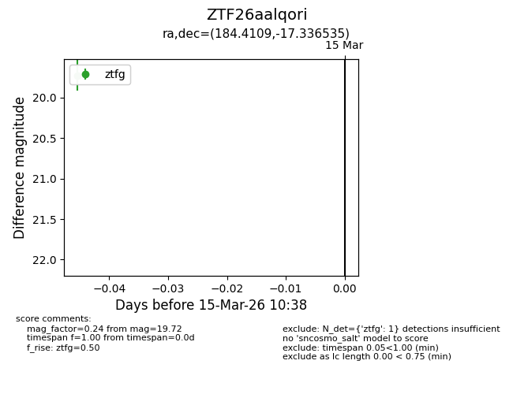
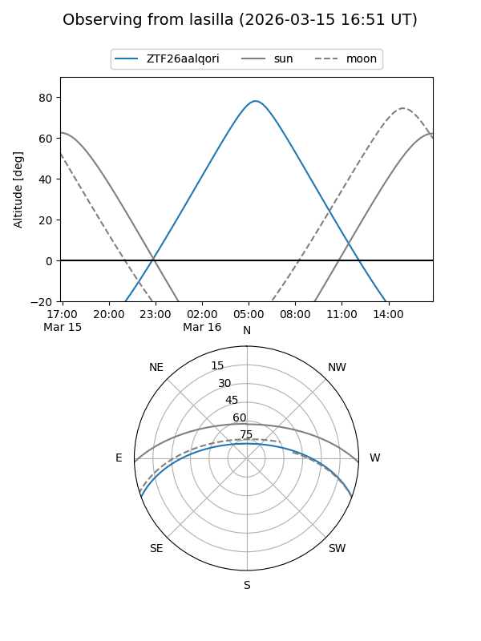
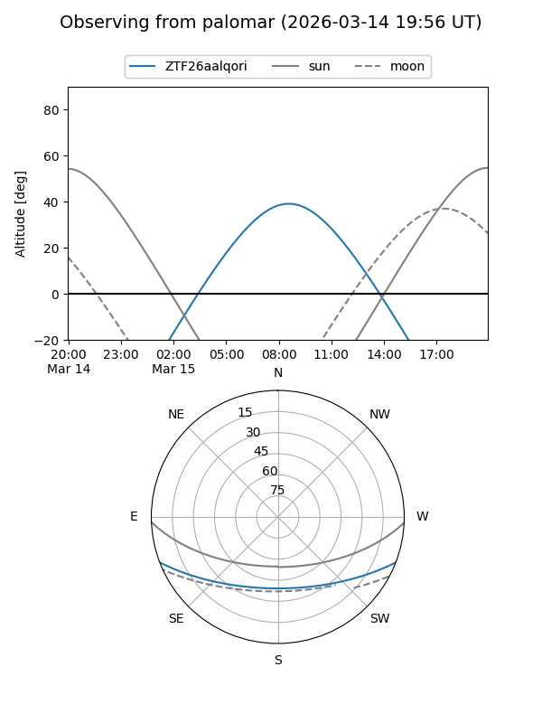

ZTF26aalqori
Target ZTF26aalqori at 2026-03-15 10:40
Aliases and brokers:
FINK: link
Lasair: link
ALeRCE: link
alt names
ZTF26aalqori (ztf,fink_ztf)
Coordinates:
equatorial (ra, dec) = 184.4109,-17.33654
equatorial (HMS+DMS) = 12:17:38.61,-17:20:11.53
galactic (l, b) = (291.5350,+44.78607)
Flags:
Photometry:
last ztfg=19.72
1 ztfg detections
Lightcurve

Visibility


Additional plots